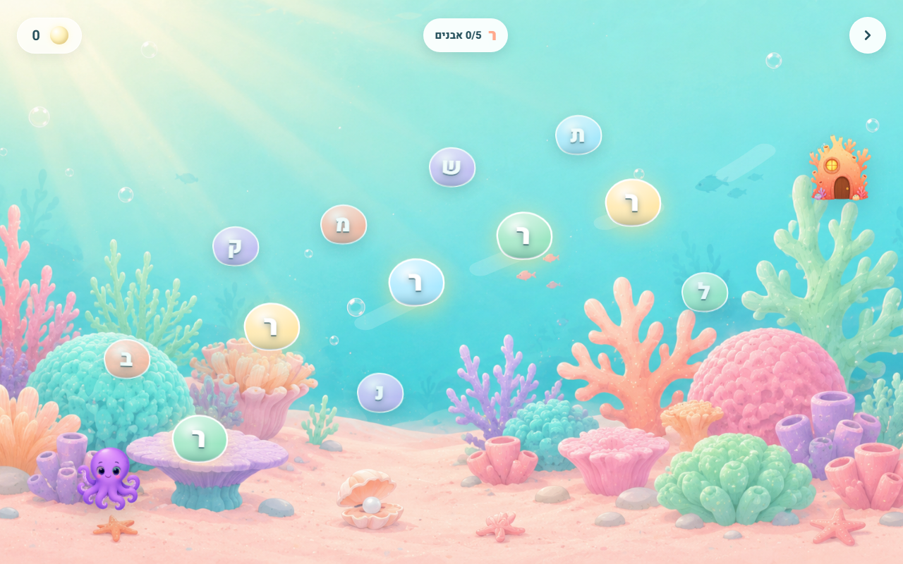
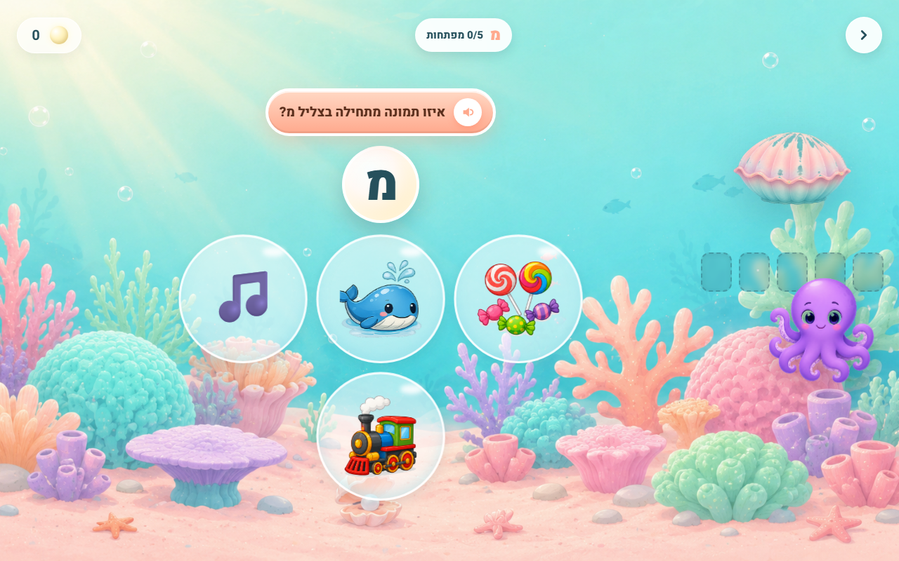
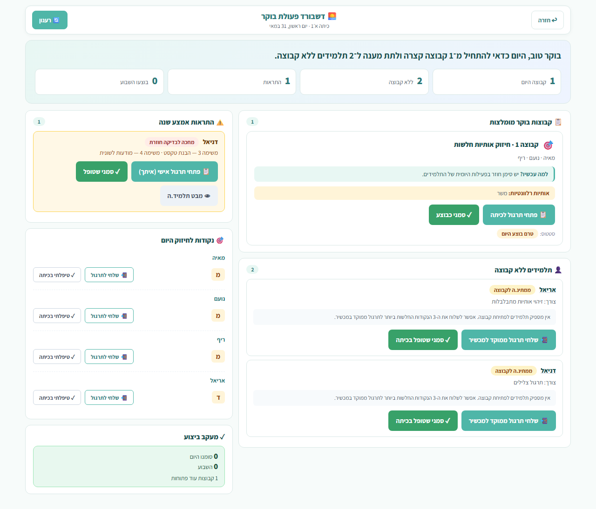
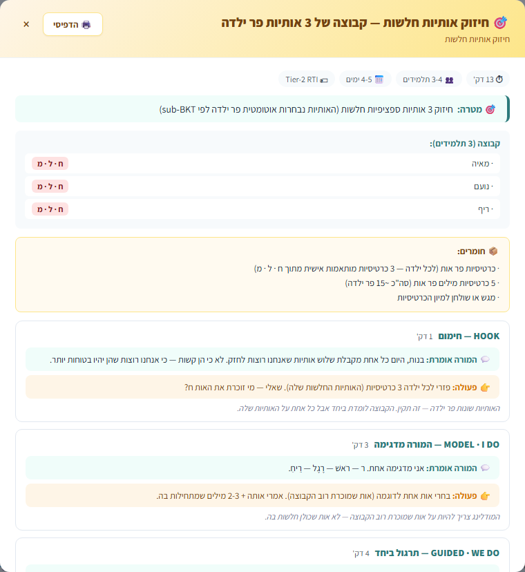
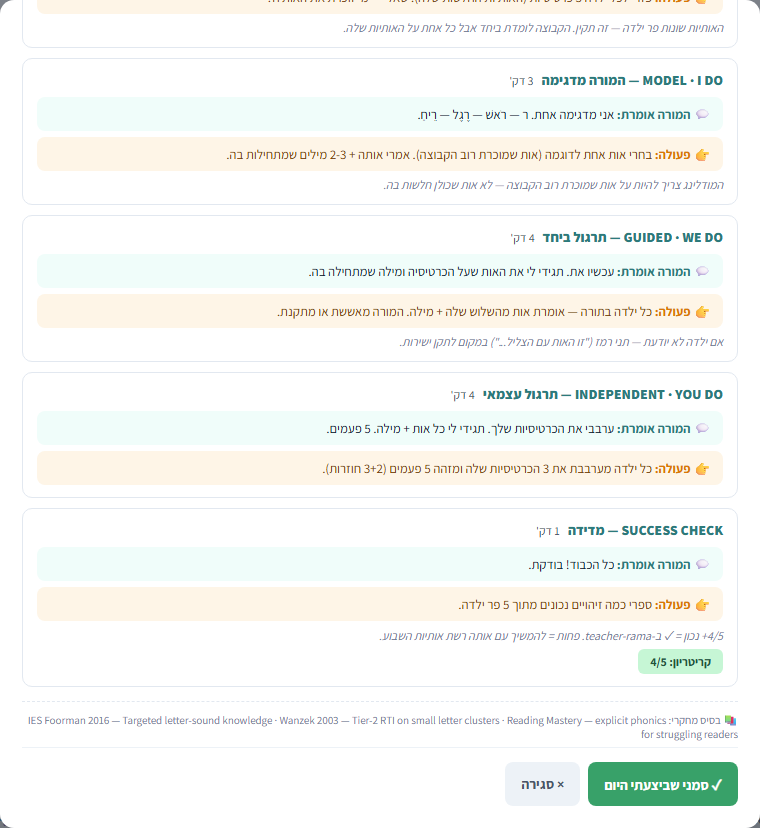
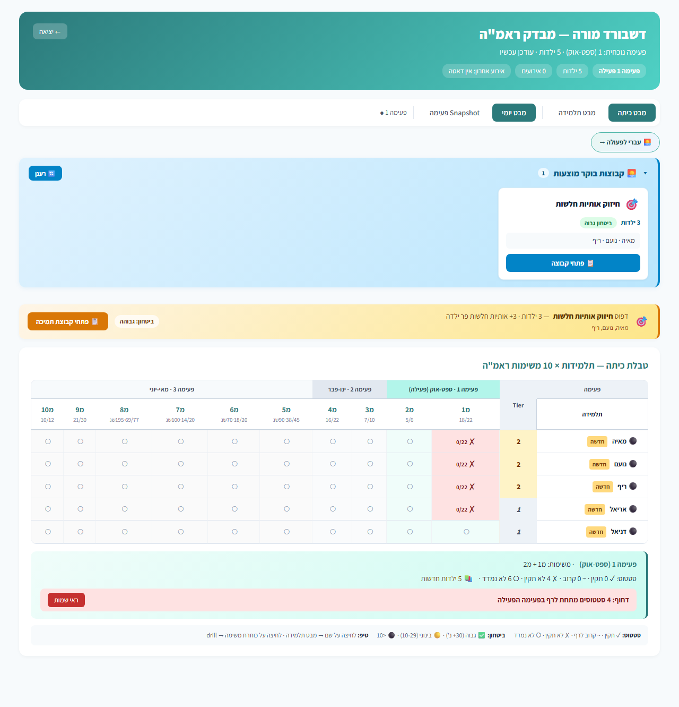
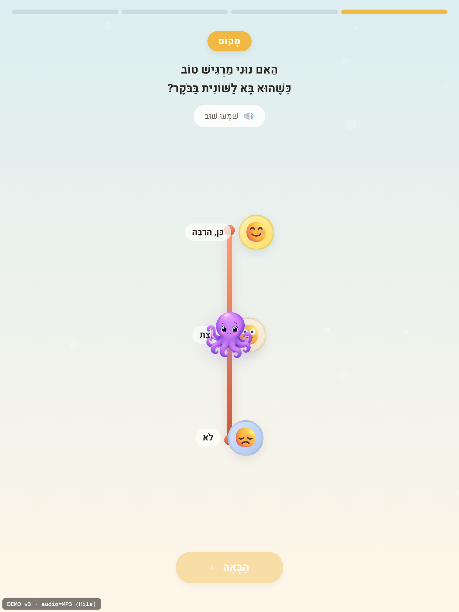
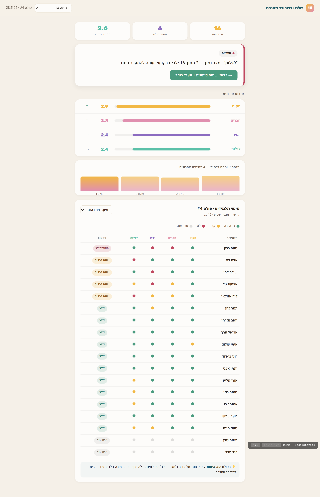

פחות הוצאה החוצה
המענה צריך להינתן בתוך סביבת הלמידה הטבעית של הילד, בתוך הקהילה, ובתוך הכיתה הרגילה.
IMPACT OS בונה מערכות דיגיטליות מותאמות לארגונים חברתיים, חינוכיים וציבוריים, כדי להפוך ידע, תהליכים ונתונים לכלים שעובדים באמת בשטח.
תוכנית החומש מבקשת לצמצם מסגרות נפרדות ולחזק את בית הספר הרגיל כמקום שבו מגוון תלמידים מקבלים מענה.
המענה צריך להינתן בתוך סביבת הלמידה הטבעית של הילד, בתוך הקהילה, ובתוך הכיתה הרגילה.
הכיתה הרגילה צריכה להפוך למרחב שמחזיק שונות פדגוגית, רגשית וחברתית בלי להוריד ציפיות.
איך מורה אחת עושה את זה ביום שלישי בבוקר, מול 28 תלמידים, בלי להפוך את ההכלה למשימה בלתי אפשרית?
המורה צריכה ללמד, לזהות, לתווך, לעקוב, לדווח ולהתאים. בלי תשתית, הדיפרנציאליות נשארת תלויה בגבורה אישית.
חלוקה קבוצתית ידנית עוזרת למורה לפעול, אבל היא לא יכולה ללוות כל תלמיד ברציפות, בזמן אמת, וברזולוציה של תת-מיומנות.
המורה עדיין עובדת עם קבוצות, מפעילה שיקול דעת, מאשרת המלצות, בוחרת התערבות ומובילה את ההוראה.
המערכת אוספת רצף של תגובות, טעויות, רמזים, זמני תגובה ועקביות כדי להבין איפה כל תלמיד נמצא בפועל.
כל תלמיד מקבל את התרגול הבא שמתאים לאבן היסוד שחסרה לו כרגע, גם אם מבחוץ הוא נראה דומה לחבריו לקבוצה.
המערכת אינה מביאה תוכנית חיצונית. היא מתחברת לרצף השיעורים, לחומרים ולדגשים שמנח״י בחרה, ומפרקת אותם למיומנויות ולרמות תמיכה.
הרצף הפדגוגי, הנושאים והחומר הנלמד נקבעים על ידי מנח״י והצוות המקצועי.
כל נושא מפורק לאבני יסוד: תת-מיומנויות, קדם-ידע, דפוסי קושי וסוגי תמיכה.
כל פעילות יודעת איזו מיומנות היא מחזקת, באיזה קושי, ובאיזה סוג תמיכה.
המערכת בונה תמונת שליטה דינמית לכל תלמיד לפי שימוש בפועל.
המורה מקבלת תובנה: מה לתרגל, עם מי לעבוד, ואיפה נדרשת התערבות.
המטרה היא לזהות בדיוק איזו אבן יסוד חסרה לתלמיד, לחזק אותה, ולהחזיר אותו בטוח יותר אל החומר הכיתתי.
זו לא שאלה של “מתקשה” או “שולט”. זו שאלה של איזו אבן יסוד חסרה לו עכשיו כדי להצליח בחומר שהכיתה לומדת.
תלמיד יכול לשלוט בזיהוי אותיות, להתקשות בצליל פותח, ולהיות באמצע הדרך בפענוח הברות. לכן אין “ילד חלש”. יש תמונת מצב רב-ממדית.
כל תגובה מעדכנת את ההבנה: מה הילד יודע, איפה הוא צריך עוד תרגול, והאם הוא מוכן לעלות שלב בלי לאבד את הקו הכיתתי.
הפרסונליזציה אינה מסלול נפרד מהכיתה. היא הדרך שמחזירה את התלמיד אל היעד המשותף.
איזו אבן יסוד חסרה ביחס לנושא שהכיתה לומדת עכשיו.
מוסיפה פריטים מדויקים ולא חזרה כללית על חומר רחב מדי.
נותנת רמז, פירוק, הקראה או הדגמה לפי סוג הקושי.
לא מסתפקת בהצלחה חד-פעמית. מחפשת שליטה עקבית.
כשהאבן מתחזקת, הילד מתקדם בתוך הרצף הכיתתי.
רמת התמיכה קובעת כמה עזרה הילד מקבל. אבני היסוד קובעות מה בדיוק הוא יתרגל.
שולטת בבסיס החיריק. מקבלת אתגר עם מילים ומשפטים מורכבים יותר.
מתקדם עם החומר הכיתתי, אבל מקבל רמזים זמינים כשזמן התגובה מתארך.
מתקשה בהבחנה בין צלילים דומים. מקבלת חזרה קצרה לאבן יסוד פונולוגית לפני החיריק.
מתקשה בקשר אות-צליל. מקבלת פירוק חזותי ושמיעתי לפני שהיא חוזרת לנושא הכיתתי.
ההתאמה לגיל אינה קישוט. היא תנאי לשימוש עקבי, למוטיבציה, ולתחושת מסוגלות.
סשנים קצרים של תרגול יומי שמתאימים לטווח קשב של א׳-ב׳.
ממשק פשוט, הוראות קוליות, משימות ברורות והפחתת עומס קריאה.
הילד רואה מסע, משימה והתקדמות. לא מבחן ולא “רמה נמוכה”.
רמזים מדורגים מאפשרים להצליח בלי להישבר ובלי לצאת מהכיתה.


המערכת הופכת נתוני תרגול לפעולה פדגוגית ברורה: מי מתקדם, מי נעצר, איפה יש קושי, ומה לעשות מחר בבוקר.
קבוצות התערבות, תלמידים שדורשים תשומת לב, והתקדמות אישית מרוכזים למסך פעולה אחד.
במקום עוד שכבת מידע, המורה מקבלת סדר עדיפויות: עם מי לעבוד, מה לחזק, ואיפה מספיק תרגול עצמאי.
המורה לא מקבלת עוד דוח לקרוא. היא מקבלת נקודת פתיחה לשיעור, לקבוצה קצרה או להתערבות פרטנית.
לחיצה על תמונה — להגדלה.



לא מספיק לדעת שהילד תרגל. צריך לחבר בין התרגול היומיומי, תמונת הכיתה, ומבדקי רוחב שמאפשרים למטה לראות התקדמות, פערים ואפקטיביות.
מבדקי רוחב כמו ראמ״ה יכולים להפוך מנקודת בדיקה תקופתית לשכבת בקרה שמחוברת לתרגול, להמלצות ולשיפור ההוראה.
אותן אבני יסוד שמופיעות בתרגול ובדשבורד יכולות להופיע גם בתמונת הרוחב: מי התקדם, איפה נשאר פער, ואיזה מענה עבד.

כוח אדם מומחה הוא קריטי להתערבות עמוקה. אבל אין מספיק עיניים לראות כל תגובה של כל ילד בכל רגע. הטכנולוגיה נותנת רציפות.
כל תלמיד מקבל עוד ועוד הזדמנויות מדויקות במקום שבו הוא צריך אותן, גם כשהמורה עובדת עם תלמיד אחר.
המערכת זוכרת כל דפוס. לא מתוך טפסים ידניים, אלא מתוך מה שהילד עושה בפועל.
המורה, המלווה והרכזת מופנים אל המקום שבו המגע האנושי הכי חשוב: התערבות, קשר, שיקול דעת.
המערכת נותנת למנח״י תמונת מצב על יישום הדיפרנציאליות, לא רק על הצהרת כוונות.
איך הכיתה שלי מתקדמת, מי צריך אותי היום, ואיזה תרגול נכון לכל תלמיד.
איפה יש קושי רוחבי, אילו מענים עובדים, ואילו כיתות צריכות ליווי ממוקד.
צמצום פערים, אפקטיביות מענים, איתור מוקדם, והחלטות משאבים על בסיס נתונים מצטברים.
פחות “מורה-לוח-כיתה אחת”, יותר למידה מותאמת בתוך אותו שיעור ואותו יעד פדגוגי.
שכבת מומחיות דיגיטלית באוריינות שמפעילה תרגול רציף ומפנה כוח אדם להתערבות עמוקה.
מלווה בית הספר ורכזת ההכלה רואים איפה נדרש סיוע, לא רק שומעים תחושת עומס.
המורה לא נדרשת להחזיק הכל בראש. היא מקבלת תמונת מצב והמלצות בשפה אנושית.
הילד מקבל חיזוק בתוך הכיתה הרגילה, עם פחות צורך לצאת למסגרת נפרדת.
אם הכיתה הרגילה היא הפתרון, היא חייבת לקבל תשתית שמאפשרת לה לראות כל תלמיד.
ירושלים יכולה להפוך את תוכנית החומש לדגם עירוני מדיד: כל תלמיד במסלול אישי, כל מורה עם תובנות, וכל מערכת עם יכולת להשתפר.
דיפרנציאליות נשענת על זמן, כוח אדם, זיכרון אישי ותכנון ידני. היא אפשרית נקודתית, אבל קשה להבטיח עקביות וסקייל.
התרגול הופך אישי, המדידה הופכת רציפה, והמורה מקבלת נקודת פתיחה מדויקת לפעולה. הדיפרנציאליות מקבלת יכולת ביצוע יומיומית.
רכישת הקריאה היא נקודת מינוף: מוקדמת, מדידה, קריטית להמשך הדרך, ומשפיעה על תחושת מסוגלות של הילד.
קושי לא מטופל בא׳-ב׳ מתרחב במהירות ומשפיע על כל מקצוע שנשען על קריאה.
קריאה מאפשרת פירוק ברור לאבני יסוד ומדידה חוזרת לאורך השנה.
ככל שסוגרים פערים מוקדם יותר, קטן הצורך במענים כבדים ומסגרות נפרדות בהמשך.
למידה לא קורית בוואקום רגשי. ילדה שמרגישה לא שייכת, חרדה או מתוסכלת — לא תתרגל גם אם המסלול הקוגניטיבי שלה מדויק. פולס נוני הוא הרכיב המשלים — ההכרחי — לפדגוגיה: 60 שניות פעמיים בחודש, ארבעה מימדים רגש-חברתיים, ודשבורד אחד שמראה את הילדה השלמה.
אבני יסוד — אותיות, צלילים, קריאה ראשונית, ומסלול אישי לפי קצב.
פולס נוני — מקום בכיתה, חברים, רגש, ושמחה ללמוד. פעמיים בחודש, 60 שניות.
שני סיגנלים בדשבורד אחד. כשקריאה ושמחה ללמוד יורדות יחד — זה אותו סיפור.
סטטוס פר כיתה + רשימת ילדים בתשומת לב — חוצה כיתות, ממוין לפי דאגה.


הבסיס המקצועי: מסגרת CASEL ל-SEL (סטנדרט בינלאומי), תיאוריית Self-Determination (Deci & Ryan — שייכות, מסוגלות, אוטונומיה), והניסיון של פולס בית הערבה בכיתות הגבוהות — מותאם לכיתות א'-ב' באמצעות סקאלת פנים חזותית, אודיו, ושאלון של 60 שניות שלא תלוי בקריאה.
אבני יסוד בנויה על Science of Reading — המתודולוגיה המבוססת-מחקר ביותר להקניית קריאה היום — ועל המסגרות המובילות בלמידה אדפטיבית ובפסיכומטריקה חינוכית.
מעל 50 שנות מחקר (NRP 2000, Scarborough's Reading Rope) הוכיחו: explicit phonics + 5 עמודות הקריאה (פונמיקה, decoding, שטף, אוצר, הבנה) משיגים תוצאות עדיפות משמעותית על שיטות whole-language. מיסיסיפי עברה מ-49 ל-21 בדירוג NAEP תוך 6 שנים בזכות מעבר ל-SOR. אבני יסוד בנויה על המסגרת הזאת.
BKT מעריך באופן רציף את ההסתברות שתלמיד שולט באבן יסוד, על בסיס רצף תגובות, רמזים וטעויות. לא ציון אחד — תמונת שליטה חיה שמתעדכנת בכל קליק.
מודל Bloom: התלמיד עובר הלאה רק כשהאבן יציבה, לא אחרי הצלחה חד-פעמית. מונע מ"פערים שטחיים" להפוך לפערים מבניים מאוחר יותר.
Vygotsky: למידה אפקטיבית קורית במרחק הנכון מהיכולת הנוכחית — לא קל מדי, לא קשה מדי. המערכת בוחרת את הפריט הבא שמתאים בדיוק לאזור הזה לכל תלמיד.
Multi-Tiered System of Supports: רוב התלמידים בתרגול שגרתי (Tier 1), חלק בתמיכה ממוקדת (Tier 2), ומיעוט בהתערבות מוגברת (Tier 3) — בלי לצאת מהכיתה הרגילה.
הטכנולוגיה מציגה תובנות והמלצות. המורה מאשרת, מתעדפת, מתערבת ומפרשת — אין החלטה פדגוגית אוטונומית של מכונה על ילד.
English Chativa היא הצעד הבא בשכבת הביצוע של ImpactOS — מערכת תרגול דיפרנציאלית-אדפטיבית לאנגלית בחטיבת הביניים. אותה מילה — ארבע דרכים, אחת לכל אחת. נבנית על מנוע אבני יסוד, ומשולבת לתוכנית הלימודים החדשה (Curriculum 2020) ולמסגרת המדידה של רמ״ה (תנופה).
מחכים לבנות יחד איתכם אתטביעת האצבע שלכם